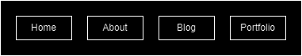

Week 2: Appetizer
Folder Structure and URL scheme
I want my website to bridge of off a core URL of "SailsShip" or "SailShip" as it has become my internet handle and motif over the years, and I feel that is something useful for branding and recognisability, I would also like each of my blog posts to have names relevant to the contents of the post featured in the URL. In terms of my folder structure, there would be the standard folders for styles and scripts, but I would also like my blog posts to be in a dedicated blogs folder. I would also have a folder dedicated to my portfolio, with sub-folders for my pictures and videos.
Website Inspirations
Before I get into the websites I really liked, I have to show one of the most frustrating and infuriating design choices I have seen in awhile and it is on the website of Lauren WallerLinks to an external site.. This website has a pop up in the corner that advertises the template of the website that the owner is selling (that of Waller) and is annoying as it ruins the whole design of the page, which is actually quite nice. There is also seemingly no one to dismiss the pop up. The other pages on the website fortunately do not have it. There is also something to be said about being force shown something to buy before any other details of the designer.
Now for some design I really liked. The first comes from Keita Yamada's Website.
The minimalistic design is something I quite appreciate, but what I really love from this website is the use of an animated background. It creates an interesting affect that doesn't drown out the information, nor make anything unreadable. I would like to do the same, but with one of my short films, or even parts of many of my short films edited together. This would act as something to immediately grab attention, while also showing of one of my skills.
Another idea I would like to adapt into my website come from Sean Halpin's Website. is his use of a moving menu bar. This bar lets you access other pages on the website without having to backtrack to the top of the page. The menu is minimalistic in design and blends in well without being unusable.
Wireframe Ideas
Wireframe 1: Design for the page menu.

Wireframe 2: A rough draft of how the portfolio page would be laid out. Each section of the portfolio page would be shown by an image representing the section with a label, such as "Landscapes" with a picture of a mountain.

Wireframe 3: Wire frame for the main page, with an idea for how the video would be underlaid below some text.

Wireframe 4: Design for the portfolio page for my short films, with each featuring a description for each.

Reflections
Interaction within the world wide web is split into two aspects, social interactivity and page interactivity. Social interactivity within the www works through websites that allow users to see each others responses or experiences, such as things like facebook, letterboxd or amazon. Page interactivity refers to the response a page makes due to the actions of a user. Something like going to a new webpage when you click a link is one of the most basic forms of interactivity. The more responsive things are the more interactive they are, like if opens space on a page to display something when a button is clicked, or if a website will display the closest stores when you move around a map.
Previous Week All Blogs Next Week